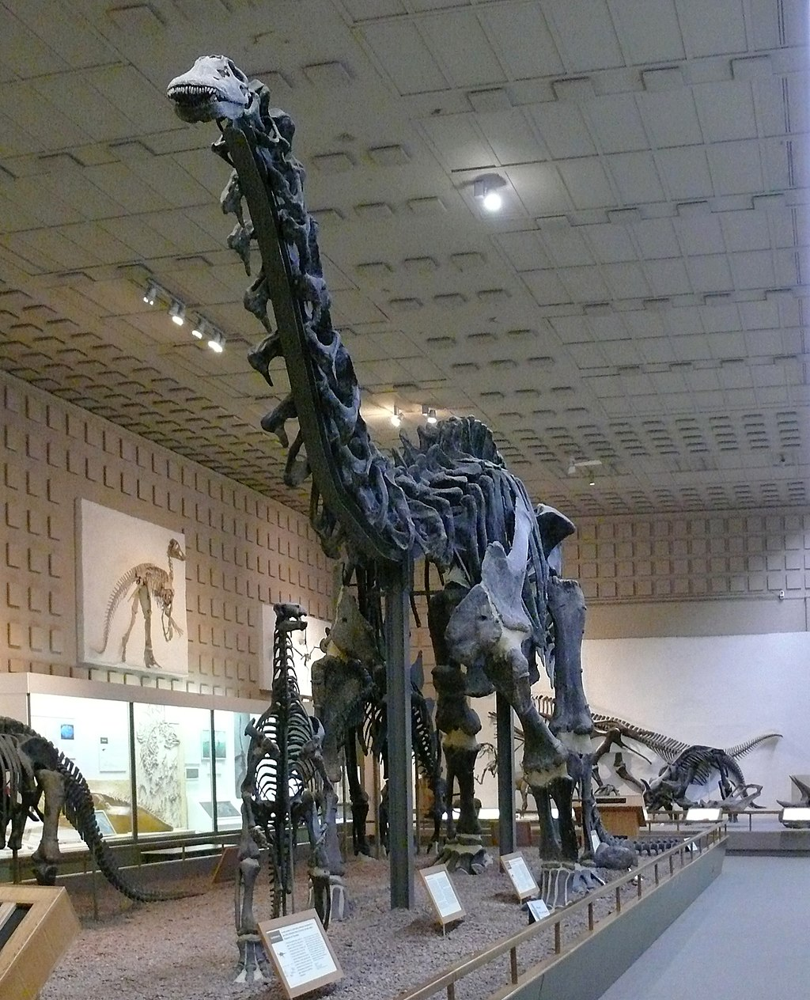

 Brontosaurus (/ˌbrɒntəˈsɔːrəs/[1][2]; meaning "thunder lizard" from Greek βροντή, brontē "thunder" and σαῦρος, sauros "lizard") is a genus of gigantic quadruped sauropod dinosaurs. Although the type species, B. excelsus, had long been considered a species of the closely related Apatosaurus,[3] researchers proposed in 2015 that Brontosaurus is a genus separate from Apatosaurus and that it contains three species: B. excelsus, B. yahnahpin, and B. parvus.[4]
Brontosaurus had a long, thin neck and a small head adapted for a herbivorous lifestyle, a bulky, heavy torso, and a long, whip-like tail. The various species lived during the Late Jurassic epoch, in the Morrison Formation of what is now North America, and were extinct by the end of the Jurassic.[5] Adult individuals of Brontosaurus are estimated to have weighed up to 15 tonnes (17 short tons) and measured up to 22 metres (72 feet) long. As the archetypal sauropod, Brontosaurus is one of the best-known dinosaurs and has been featured in film, advertising, and postage stamps, as well as many other types of media.